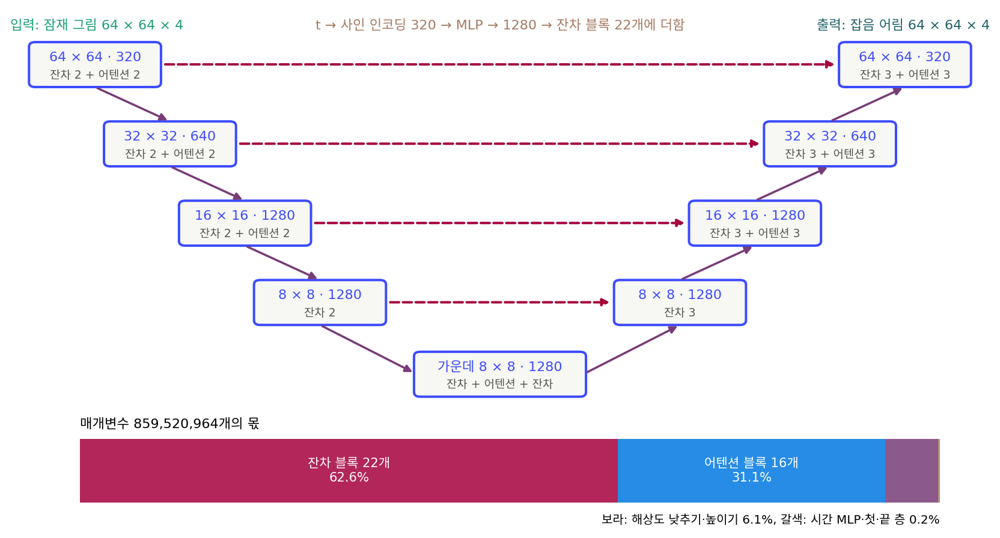

잔차 블록: 고친 만큼만 더해 내보낸다
부품이 다 모였다. 해상도를 낮추며 내려가는 길, 건너뛰기 연결을 받으며 올라오는 길, 블록마다 더하는 시간 벡터. 실제 신경망은 이것을 얼마나 깊이 쌓을까? Stable Diffusion 1.x 의 잡음 예측 신경망에는 합성곱 블록이 22개, 3 × 3 합성곱만 세어도 50층이 넘는다. 층을 이렇게 깊이 쌓으면 학습이 순순히 될까?
역사: 층을 더했더니 학습 오차가 늘었다
2015년 마이크로소프트 연구소의 허(Kaiming He)와 동료들은 이상한 현상을 보고했다. CIFAR-10 에서 합성곱을 그냥 쌓은 신경망을 20층과 56층으로 학습하자, 56층이 시험 오차뿐 아니라 학습 오차까지 더 높았다. 외워서 생긴 문제(과적합)라면 학습 오차는 낮아야 한다. 그들은 이렇게 따졌다. 20층 신경망을 그대로 베끼고 그 위에 아무것도 바꾸지 않는 층 36개를 얹으면 56층 신경망이 된다. 그러니 56층은 적어도 20층만큼은 잘할 수 있다. 그런데도 학습이 그 답을 찾지 못한다면, 문제는 표현력이 아니라 최적화의 어려움이다. 층 여러 개를 쌓아 「아무것도 바꾸지 않기」를 배우는 것조차 쉽지 않다는 것이다.
그들의 처방은 층이 원하는 출력 전체를 배우게 하지 말고, 입력에서 고칠 만큼만 배우게 하는 것이었다. 고칠 것이 없으면 그 몫을 0으로 밀면 된다. 그들은 이 신경망으로 152층까지 쌓아 2015년 ImageNet 분류 대회에서 오류율 3.57%로 1위를 했다.
입력을 그대로 넘기고 고친 만큼 더하기
입력 h는 아무것도 거치지 않고 출력으로 넘어가고, 블록 안의 층들은 고칠 몫 F만 더한다. 입력과 출력의 채널 수가 다르면 넘어가는 길에 1 × 1 합성곱을 하나 둔다. 이처럼 입력을 출력에 그대로 더해 내보내는 블록을 잔차 블록 (입력에 고친 만큼만 더해 내보내는 블록 / residual block)이라 한다. 「잔차」는 원하는 출력에서 입력을 뺀 나머지, 곧 블록이 맡는 몫을 가리킨다. 시간 벡터는 블록 안 두 합성곱 사이에 더해진다(ComfyUI ResBlock._forward). Stable Diffusion 1.x 원래 코드(CompVis)는 블록의 마지막 합성곱을 0으로 놓고 학습을 시작한다. 처음에는 모든 잔차 블록이 입력을 그대로 넘기는 셈이다.
잔차 블록은 건너뛰기 연결과 이름이 닮았지만 하는 일이 다르다. 잔차 블록은 블록 하나를 건너 입력을 더하고, U-Net 의 건너뛰기 연결은 해상도 단계 여러 개를 건너 특징을 이어 붙인다.
한 벌로 조립하기

Stable Diffusion 1.x 의 잡음 예측 신경망을 이 장의 부품으로 읽어 보자. 64 × 64 × 4 잠재 그림이 3 × 3 합성곱으로 채널 320이 되고, 네 단계를 내려간다. 단계마다 잔차 블록 둘, 첫 세 단계에는 블록마다 어텐션 블록이 하나씩 붙는다. 가운데 8 × 8칸에서 잔차 블록, 어텐션 블록, 잔차 블록을 지난 뒤, 네 단계를 올라온다. 올라오는 단계마다 잔차 블록이 셋이고, 그 셋은 내려가는 길에서 건너온 특징을 하나씩 받아 이어 붙인다. 마지막에 3 × 3 합성곱이 채널 320을 4로 돌려 잡음 어림을 내놓는다. 잔차 블록은 모두 22개, 어텐션 블록은 16개다.
매개변수는 모두 859,520,964개다. 잔차 블록이 62.6%, 어텐션 블록이 31.1%, 해상도를 낮추고 높이는 합성곱이 6.1%를 차지한다. 어텐션 블록은 멀리 떨어진 칸끼리 서로를 직접 읽게 하고, 글 인코더가 넘긴 조건을 그림 칸마다 읽어 오는 부품이다. 해상도를 낮춰도 몫이 가운데에 몰리는 문제를 메우려고 들어왔지만, 그 속은 트랜스포머를 다룰 때 연다.
ML에서: 같은 뼈대, 다른 배분
DDPM 의 CIFAR-10 모델은 3,570만 개였고, 같은 논문의 256 × 256 모델은 1억 1,400만 개, 채널을 늘린 큰 판은 약 2억 5,600만 개였다. Stable Diffusion 1.x 는 그림을 잠재 공간으로 줄여 64 × 64칸에서 일하면서 8억 6,000만 개로 커졌다. 뼈대는 그대로 두고 단계 수, 단계마다의 채널, 어텐션 블록을 어느 단계에 몇 개 둘지를 모델마다 다르게 정한다. 다음 문제에서 SDXL 과 견줘 보자.
문제 10. 말 전하기 놀이
20명이 한 줄로 서서 귓속말로 문장을 전한다. 한 사람을 거칠 때마다 원래 내용의 90%만 정확히 전해진다고 하자. (가) 마지막 사람에게 원래 내용은 몇 %가 남는가? (나) 규칙을 바꿔, 첫 사람이 쓴 쪽지를 끝까지 그대로 넘기고 사람마다 쪽지 옆에 고칠 점만 적어 덧붙인다면?

0.9를 스무 번 곱하면 0.9²⁰ = 0.122, 12.2%요. 거의 다 사라지네요.

(나)에서 쪽지에 적힌 원래 내용은요?

쪽지는 아무도 고치지 않았으니까 100% 남아요. 사람들이 덧붙인 메모가 틀려도 원래 내용은 지워지지 않고요.

그런데 (나)에서 아무도 덧붙이지 않으면 마지막 사람도 첫 문장 그대로 받는 거네. 줄이 길어져도 손해가 없어.

(가)에서 줄을 40명으로 늘리면요?

0.9⁴⁰ = 0.015라서 1.5%예요. 사람을 늘릴수록 손해고요. (나)는 40명이어도 100%라서, 사람을 늘려서 손해 볼 일이 없어요. 이게 56층이 20층보다 못했던 일이랑 같은 모양이네요.
조별 보고서를 한 사람씩 통째로 다시 쓰면 처음 내용이 사라지는데, 원본은 두고 각자 수정 제안만 달면 안 사라지는 거랑 같아요.
문제 11. 0으로 시작하는 잔차 블록
한 숫자 h를 받는 장난감 블록 10개를 쌓는다. 그냥 쌓은 블록은 h ↦ ah, 잔차 블록은 h ↦ h + ah이다(a는 블록마다의 학습할 수). (가) 모든 블록의 a가 0.1일 때, 두 줄이 입력 1을 각각 얼마로 내보내는가? (나) 모든 a를 0에서 시작하면 두 줄의 출력과, 첫 블록의 a로 출력을 미분한 값은? (다) Stable Diffusion 1.x 원래 코드가 잔차 블록의 마지막 합성곱을 0으로 놓고 시작하는 까닭은?
(가)는 그냥 쌓으면 0.1¹⁰ = 10⁻¹⁰, 잔차 블록은 1.1¹⁰ = 2.594예요. 그냥 쌓은 쪽이 거의 0이 되네요.
(나)에서 그냥 쌓은 줄을 a = 0으로 시작하면 학습이 어떻게 될까요?

출력이 0이고, 첫 블록의 a로 미분하면 나머지 a 아홉 개를 곱한 값이 붙으니까 그것도 0이에요. 모든 a가 그래요. 기울기가 0이라 한 걸음도 못 움직이네요.
잔차 쪽은 a = 0이면 출력이 그냥 1이고, 첫 블록의 a로 미분하면 나머지 블록이 다 (1 + 0) = 1을 곱해 주니까 1이야. 모든 블록이 처음부터 기울기 1을 받아.

(다)는요?

처음엔 모든 잔차 블록이 아무것도 안 바꾸니까 50층이 넘는 신경망이 사실상 얕은 신경망으로 출발해요. 그러면서도 블록마다 기울기는 막힘없이 닿아서, 필요한 블록부터 조금씩 고치기 시작하고요. 그냥 쌓은 신경망이었다면 0으로 놓는 순간 신호가 끊겼을 거예요.

그래요. 허와 동료들이 따진 「아무것도 바꾸지 않는 층을 얹은 56층」을 처음 상태로 만들어 버린 거예요.
곱셈의 연쇄에서 1 근처의 수를 곱하는 것과 0 근처의 수를 곱하는 것의 차이네요. 무한곱이 수렴하려면 항이 1로 가야 한다고 배운 게 생각나요.
문제 12. 매개변수는 어디에 쓰이나
Stable Diffusion 1.x 의 잡음 예측 신경망은 매개변수가 859,520,964개다. 시간 MLP 가 2,050,560개, 잔차 블록 22개 안에서 시간 벡터를 채널 수로 바꾸는 층들이 합쳐서 25,824,960개다. SDXL 의 신경망은 2,567,463,684개이고, 해상도 단계가 셋(잠재 그림 128 × 128 → 64 × 64 → 32 × 32)이며, 어텐션 블록이 2,209,201,920개, 잔차 블록이 327,898,880개를 차지한다. (가) Stable Diffusion 1.x 에서 시간을 받는 데 쓰는 매개변수는 전체의 몇 %인가? (나) SDXL 에서 어텐션 블록과 잔차 블록의 몫은? (다) 두 모델의 배분 차이는 무엇을 말해 주는가?
(가)는 2,050,560 ÷ 859,520,964 = 0.24%예요. 시간은 정말 조금이네요.
시간 벡터는 MLP 에서 끝나나요? 그 벡터가 어디로 가죠?

잔차 블록마다 들어가죠. 그 층들까지 더하면 27,875,520개, 3.24%예요. 그래도 작아요. 숫자 하나를 알리는 데 신경망의 3%면 싼 편 아닌가요?
(나)는 어텐션이 2,209,201,920 ÷ 2,567,463,684 = 86.0%, 잔차 블록이 12.8%야. Stable Diffusion 1.x 는 잔차 블록 62.6%, 어텐션 31.1%였으니까 거의 뒤집혔어.
SDXL 은 가장 높은 해상도인 128 × 128 단계에는 어텐션 블록을 두지 않고, 64 × 64 단계에 트랜스포머 층 2개짜리, 32 × 32 단계에 10개짜리 어텐션 블록을 몰았어요. 왜 그랬을까요?
합성곱으로 해상도를 낮추며 멀리 보는 길에는 한계가 있으니까, 멀리 보는 일을 어텐션에 더 맡긴 거겠죠. 그리고 칸 수가 적은 단계에 어텐션을 몰면 칸끼리 서로 읽는 계산이 싸요.

그럼 점점 합성곱은 칸 하나하나의 결만 다듬고, 그림 전체를 보는 일은 어텐션이 맡는 쪽으로 가는 거네요. 끝까지 가면 합성곱 없이 어텐션만으로 짤 수도 있겠어요.
그 물음이 다음 구조로 이어져요. 지금은 숫자로 확인한 것까지만 붙들어 둬요. 같은 U자 뼈대 안에서도 매개변수를 어디에 쓸지가 모델마다 크게 다르다는 것이요.
동아리 예산에서 해마다 행사비와 장비비 비율이 바뀌는 거랑 같네요. 동아리 이름은 그대로인데 하는 일의 무게가 옮겨 가요.